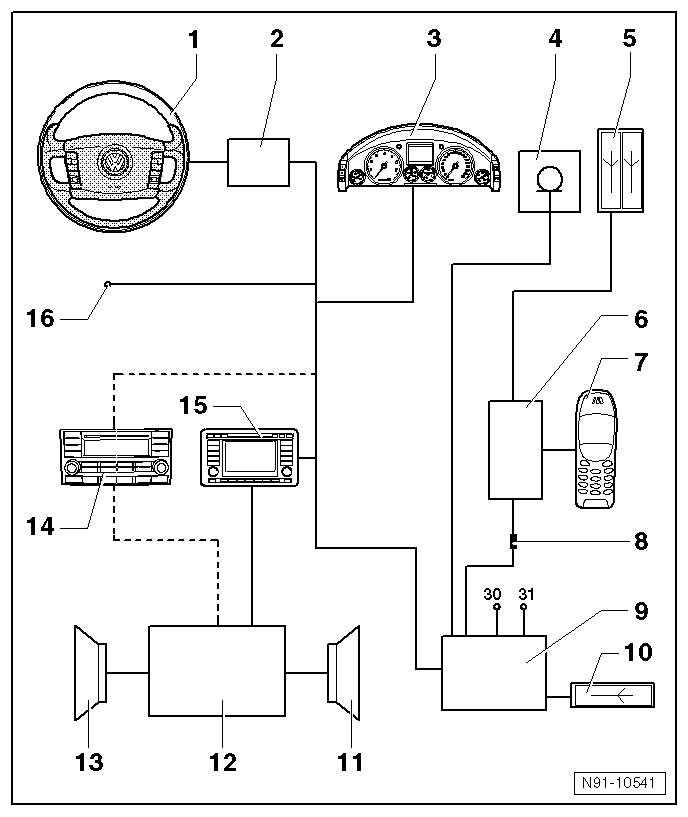

Telephone System with Telephone Bracket in Center Armrest Overview
Telephone System with Telephone Bracket in Center Armrest Overview

1 Multifunction Steering Wheel
2 Steering Column Electronic Systems Control Module (J527)
3 Instrument Cluster
4 Telephone Microphone (R38)
• Microphone, removing and installing, refer to --> [ Telephone Microphone ] Service and Repair
5 Telephone antenna (R65)
• installed in right front fender
• additional information in antenna systems chapter, refer to --> [ Antenna Systems ] Antenna Systems
6 Telephone cradle in center armrest
• Telephone cradle, removing, refer to --> [ Telephone Mount ] Telephone Mount
• Telephone cradle base plate, refer to --> [ Telephone Cradle Base Plate ] Telephone Cradle Base Plate
7 Cellular telephone (R54)
8 Telephone base plate spiral cable connector
• the connector is located on the left side in the center console in the area of the front center armrest. The center console must be removed to remove it.
9 Telephone Transceiver (R36)
• Telephone transceiver, removing and installing, refer to --> [ Telephone Transceiver ] Telephone Transceiver
10 Bluetooth Antenna (R152)
• directly connected to telephone transceiver under right front seat
11 Right speaker group
12 Digital Sound System Control Module (J525)
• additional in formation in sound system amplifier chapter, refer to --> [ CD Changer ] Description and Operation
13 Left speaker group
14 Radio (R)
• additional information in Delta radio system chapter, refer to --> [ Delta Radio System ] Delta Radio System
15 Radio/Navigation Display Control Module (J503)
• additional information in radio navigation system chapter, refer to --> [ Radio Navigation System 2 with MFD ] Radio Navigation System 2 with MFD
16 CAN-Bus Infotainment